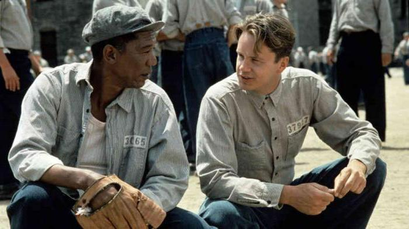
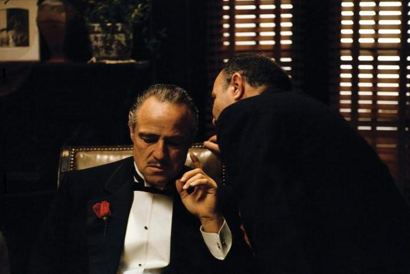
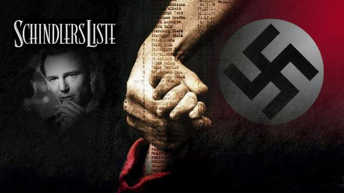

Топ 5 лучших фильмов мира
Список 5 лучших фильмов мира существует. Он составлен ресурсом, известным как Internet Movie Database. Это – крупнейшая во всем мире база, посвящённая кинематографу. Составленный ею рейтинг можно считать по большей части объективным. Поскольку то, насколько хорош фильм, определяется на основе подлинной байесовой оценки, определяемой по особой формуле. Её сейчас рассматривать не нужно, лучше сразу перейти к рейтингу.
1 место: «Побег из Шоушенка»
Вряд ли найдётся человек, который не согласится с тем, что это произведение кинематографа – культовая драма, достойная занимать верхушку ТОП-10 лучших фильмов мира.
Над её созданием работал Фрэнк Дарабонт, который, бесспорно, удачно экранизировал роман Стивена Кинга, известный под названием «Рита Хейуорт и спасение из Шоушенка».
Главные роли исполнили такие культовые артисты, как Тим Роббинс, Морган Фримен, Боб Гантон, Уильям Сэдлер и многие другие. Этот фильм – целая эпоха, и его обязан посмотреть каждый человек, являющийся неравнодушным к кинематографу.
2 и 3 места: «Крёстный отец» (1 и 2 части)
Фрэнсис Форд Каполла снял эти эпические гангстерские драмы в 1972 и 1974 годах, и вот уже на протяжении долгого времени они занимают вторую и третью строчки в ТОП-10 самых лучших фильмов в мире.
Всем известно, что есть и третья часть – заключительная. Но она в этот рейтинг не вошла, хотя на её съёмки было выделено больше всего средств - $ 54 млн. Сборы при этом составили около $ 136.7 млн. A вот первая часть, занимающая вторую строчку в обсуждаемом топе, собрала порядка 268,5 миллиона долларов! Хотя на её съёмки затратили всего $ 6 млн.
4 место: «Тёмный рыцарь»
Фильм, который в сравнении c остальными является новым. Выпущенный в 2008 году супергеройский боевик сделал кассу более, чем в миллиард долларов при бюджете в $ 185 млн.
Вторая часть трилогии о Бэтмене получила невероятный успех. Главные роли исполнили культовые актёры. Кристиан Бэйл сыграл Бэтмена, а Хит Леджер – его заклятого врага Джокера. За эту роль великого актёра посмертно наградили премией «Оскар». Она, кстати, стала одной из его последних.
Несмотря на то что заключительная часть трилогии собрала на 80 миллионов больше (хотя и бюджет был увеличен на столько же), восторженных отзывов было меньше. Многие критики говорили, что в фильме есть серьёзные сюжетные дыры, игнорировать которые просто нельзя.
5 место: «Список Шиндлера»
Эта историческая драма, снятая в 1993 году Стивеном Спилбергом, по праву считается одним из 10 самых лучших фильмов в мире.
B данной киноленте рассказывается про Оскара Шиндлера – немецкого бизнесмена, являющегося также членом НСДАП, который спас порядка 1000 польских евреев во времена Холокоста от гибели. Фильм основан на реальных событиях, a сценарий – это адаптированный роман Томаса Кенилли, который известен под названием «Ковчег Шиндлера».
Кинокартина получила несколько десятков наград. Семь «Оскаров», столько же премий BAFTA, три «Золотых глобуса», «Грэмми», National Board of Review… лишь это является довольно весомым аргументом для того, чтобы посмотреть «Список Шиндлера», если кто-то его не видел.